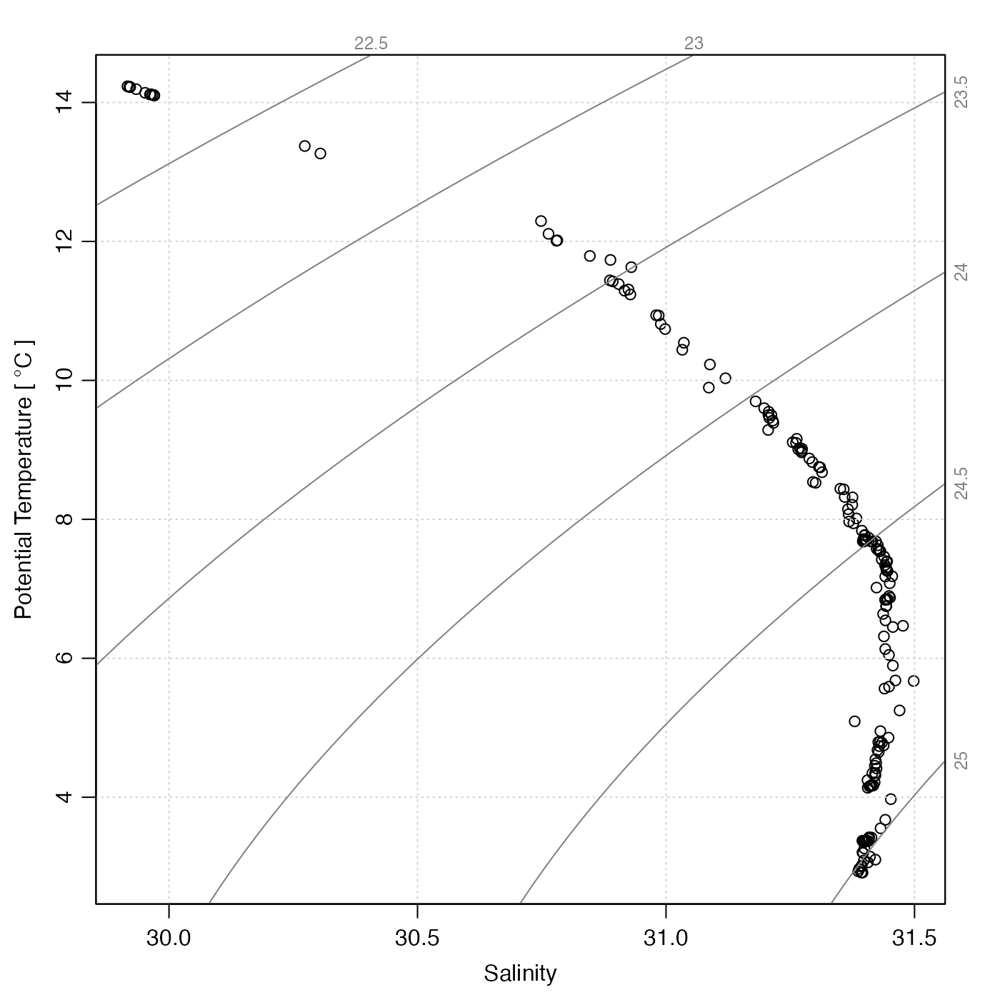
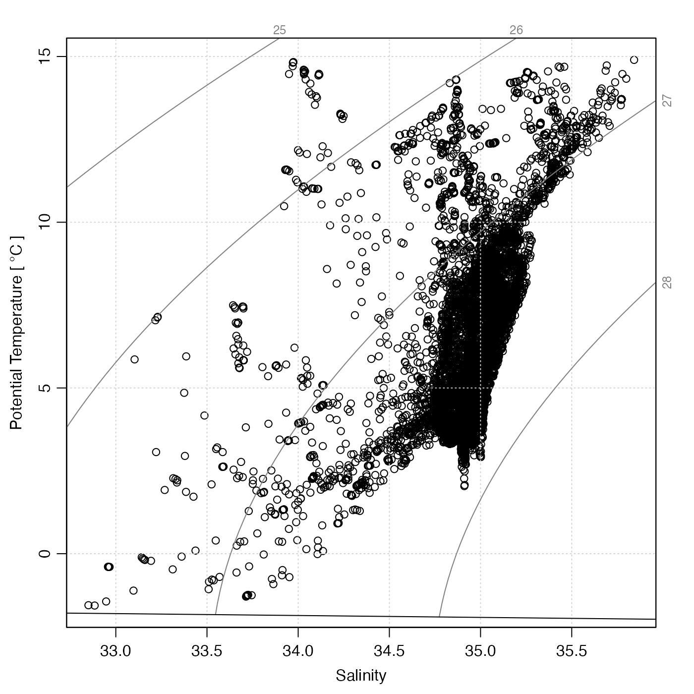
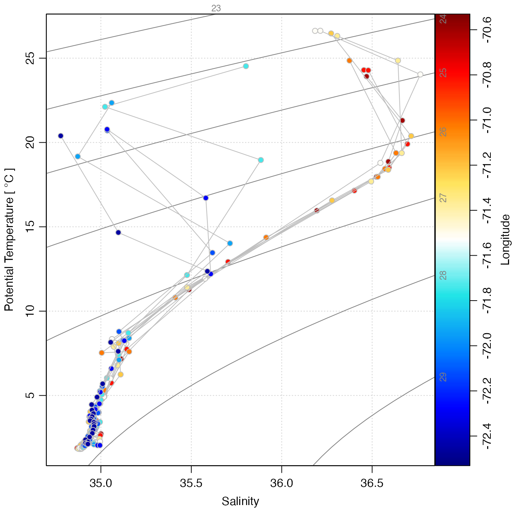
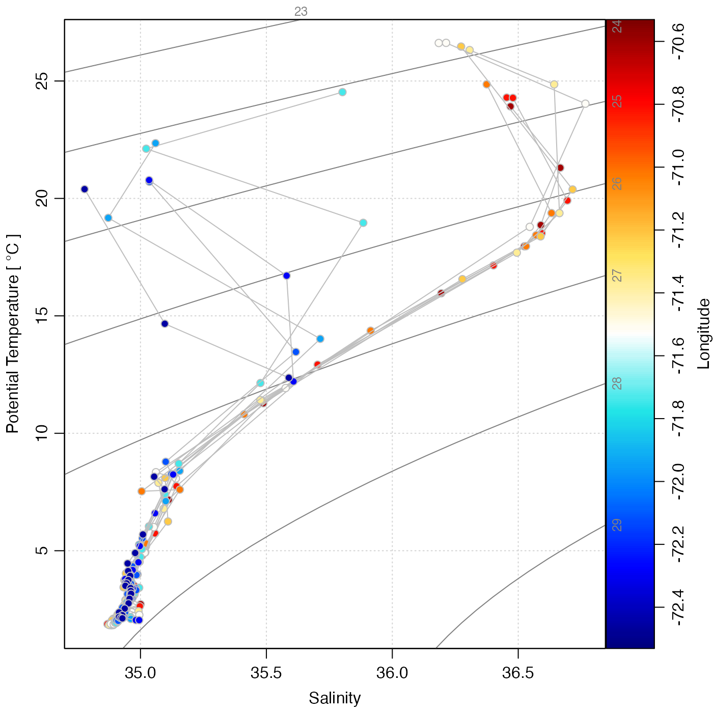

Creates a temperature-salinity plot for a CTD cast, with labeled isopycnals.
plotTS(
x,
inSitu = FALSE,
type = "p",
referencePressure = 0,
nlevels = 6,
levels,
grid = TRUE,
col.grid = "lightgray",
lty.grid = "dotted",
rho1000 = FALSE,
eos = getOption("oceEOS", default = "gsw"),
cex = par("cex"),
col = par("col"),
pch = par("pch"),
bg = "white",
pt.bg = "transparent",
col.rho = gray(0.5),
cex.rho = 3/4 * par("cex"),
rotate = TRUE,
useSmoothScatter = FALSE,
xlab,
ylab,
Slim,
Tlim,
drawFreezing = TRUE,
trimIsopycnals = TRUE,
mgp = getOption("oceMgp"),
mar = c(mgp[1] + 1.5, mgp[1] + 1.5, mgp[1], mgp[1]),
lwd = par("lwd"),
lty = par("lty"),
lwd.rho = par("lwd"),
lty.rho = par("lty"),
add = FALSE,
inset = FALSE,
debug = getOption("oceDebug"),
...
)Arguments
- x
a ctd, argo or section object, or a list containing solely ctd objects or argo objects.
- inSitu
A boolean indicating whether to use in-situ temperature or (the default) potential temperature, calculated with reference pressure given by
referencePressure. This is ignored ifeos="gsw", because those cases the y axis is necessarily the conservative formulation of temperature.- type
representation of data,
"p"for points,"l"for connecting lines, or"n"for no indication.- referencePressure
reference pressure, to be used in calculating potential temperature, if
inSituisFALSE.- nlevels
Number of automatically-selected isopycnal levels (ignored if
levelsis supplied).- levels
Optional vector of desired isopycnal levels.
- grid
a flag that can be set to
TRUEto get a grid.- col.grid
color for grid.
- lty.grid
line type for grid.
- rho1000
if TRUE, label isopycnals as e.g. 1024; if FALSE, label as e.g. 24
- eos
equation of state to be used, either
"unesco"or"gsw".- cex
character-expansion factor for symbols, as in par
("cex").- col
color for symbols.
- pch
symbol type, as in par
("pch").- bg
optional color to be painted under plotting area, before plotting. (This is useful for cases in which
inset=TRUE.)- pt.bg
inside color for symbols with
pchin 21:25- col.rho
color for isopycnal lines and their labels.
- cex.rho
size of the isopycnal labels.
- rotate
if TRUE, labels in right-hand margin are written vertically
- useSmoothScatter
if TRUE, use
smoothScatter()to plot the points.- xlab
optional label for the x axis, with default "Salinity [PSU]".
- ylab
optional label for the y axis, with default "Temperature [C]".
- Slim
optional limits for salinity axis, otherwise inferred from visible data (i.e. the data that have finite values for both salinity and temperature).
- Tlim
as
Slim, but for temperature.- drawFreezing
logical indication of whether to draw a freezing-point line. This is based on zero pressure. If
eos="unesco"thenswTFreeze()is used to compute the curve, whereas ifeos="gsw"thengsw::gsw_CT_freezing()is used; in each case, zero pressure is used.- trimIsopycnals
logical value (
TRUEby default) that indicates whether to trim isopycnal curves to the region of temperature-salinity space for which density computations are considered to be valid in the context of the choseneos; see “Details”.- mgp
3-element numerical vector to use for
[par](mgp), and also for par(mar), computed from this. The default is tighter than the R default, in order to use more space for the data and less for the axes.- mar
value to be used with par
("mar"). If set toNULL, then par("mar")is used. A good choice for a TS diagram with a palette to the right ismar=par("mar")+c(0, 0, 0, 1)).- lwd
line width of lines or symbols.
- lty
line type of lines or symbols.
- lwd.rho
line width for density curves.
- lty.rho
line type for density curves.
- add
a flag that controls whether to add to an existing plot. (It makes sense to use
add=TRUEin thepanelargument of acoplot(), for example.)- inset
set to
TRUEfor use withinplotInset(). The effect is to prevent the present function from adjusting margins, which is necessary because margin adjustment is the basis for the method used byplotInset().- debug
a flag that turns on debugging. Set to 1 to get a moderate amount of debugging information, or to 2 to get more.
- ...
optional arguments passed to plotting functions.
Value
A list is silently returned, containing xat and yat,
values that can be used by oce.grid() to add a grid to the plot.
Details
The isopycnal curves (along which density is constant) are
drawn with drawIsopycnals(), which also places
labels in the margins showing density minus 1000 \(kg/m^3\).
If trimIsopycnals is TRUE (which is the default), these curves
are trimmed to the region within which the results of density calculation
in the chosen equation of state (eos) are considered to be reliable.
With eos="unesco" this region includes
Practical Salinity from 0 to 42 and Potential Temperature
from -2C to 40C, in accordance with Fofonoff and Millard
(1983, page 23).
With eos="gsw" the lower
limit of Absolute Salinity validity is taken as 0 g/kg,
in accordance with both McDougall et al. (2003 section 3)
and the TEOS-10/gsw Matlab code for the so-called "funnel" of validity.
However, an appropriate upper limit on Absolute Salinity is not as clear.
Here, the value 42 g/kg is chosen to match the "funnel" Matlab code
as of July 2020, but two other choices might have been
made. One is 50 g/kg, since gsw::gsw_SA_from_rho() returns NA values
for Absolute Salinities exceeding that value, and another is
40 g/kg, as in McDougall et al. (2003 section 3).
The Conservative Temperature range is set to run from -2C
to 33C, as in McDougall et al. (2003 section 3), even though the
"funnel" imposes no upper limit on this variable.
References
Fofonoff, N. P., and R. C. Millard. "Algorithms for Computation of Fundamental Properties of Seawater." UNESCO Technical Papers in Marine Research. SCOR working group on Evaluation of CTD data; UNESCO/ICES/SCOR/IAPSO Joint Panel on Oceanographic Tables and Standards, 1983. https://unesdoc.unesco.org/ark:/48223/pf0000059832.
McDougall, Trevor J., David R. Jackett, Daniel G. Wright, and Rainer Feistel. "Accurate and Computationally Efficient Algorithms for Potential Temperature and Density of Seawater." Journal of Atmospheric and Oceanic Technology 20, no. 5 (May 1, 2003): 730-41.
https://journals.ametsoc.org/jtech/article/20/5/730/2543/Accurate-and-Computationally-Efficient-Algorithms.
See also
summary,ctd-method() summarizes the information, while
read.ctd() scans it from a file.
Other functions that plot oce data:
download.amsr(),
plot,adp-method,
plot,adv-method,
plot,amsr-method,
plot,argo-method,
plot,bremen-method,
plot,cm-method,
plot,coastline-method,
plot,ctd-method,
plot,gps-method,
plot,ladp-method,
plot,landsat-method,
plot,lisst-method,
plot,lobo-method,
plot,met-method,
plot,odf-method,
plot,rsk-method,
plot,satellite-method,
plot,sealevel-method,
plot,section-method,
plot,tidem-method,
plot,topo-method,
plot,windrose-method,
plot,xbt-method,
plotProfile(),
plotScan(),
tidem-class
Other things related to ctd data:
CTD_BCD2014666_008_1_DN.ODF.gz,
[[,ctd-method,
[[<-,ctd-method,
as.ctd(),
cnvName2oceName(),
ctd-class,
ctd.cnv,
ctdDecimate(),
ctdFindProfiles(),
ctdRaw,
ctdRepair(),
ctdTrim(),
ctd_aml.csv,
ctd,
d200321-001.ctd,
d201211_0011.cnv,
handleFlags,ctd-method,
initialize,ctd-method,
initializeFlagScheme,ctd-method,
oceNames2whpNames(),
oceUnits2whpUnits(),
plot,ctd-method,
plotProfile(),
plotScan(),
read.ctd.itp(),
read.ctd.odf(),
read.ctd.odv(),
read.ctd.sbe(),
read.ctd.woce.other(),
read.ctd.woce(),
read.ctd(),
setFlags,ctd-method,
subset,ctd-method,
summary,ctd-method,
woceNames2oceNames(),
woceUnit2oceUnit(),
write.ctd()
Examples
## For a simple ctd object
library(oce)
data(ctd)
plotTS(ctd)

## For a section object (note the outlier!)
data(section)
plotTS(section)
## Adding a colormap based on a different variable, e.g. oxygen
marOrig <- par("mar") # so later plots with palettes have same margins
cm <- colormap(section[['oxygen']])
drawPalette(colormap=cm, zlab='Oxygen')
plotTS(section, pch=19, col=cm$zcol, mar=par('mar')) # the mar adjusts for the palette

## Coloring based on station:
Tlim <- range(section[['temperature']], na.rm=TRUE)
Slim <- range(section[['salinity']], na.rm=TRUE)
cm <- colormap(seq_along(section[['latitude', 'byStation']]))
par(mar=marOrig) # same as previous plot
drawPalette(colormap=cm, zlab='Latitude')
plotTS(section, Tlim=Tlim, Slim=Slim, pch=NA, mar=par('mar'))
jnk <- mapply(
function(s, col) {
plotTS(s, col=col, add=TRUE, type='l')
},
section[['station']], col=cm$zcol)
 ## Show TS for an argo object
data(argo)
plotTS(handleFlags(argo))

## Show TS for an argo object
data(argo)
plotTS(handleFlags(argo))
